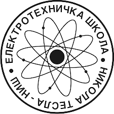

Priručnik za učenike
OSNOVE THREE.JS
Uvod u 3D prikaz na webu, rad sa scenom i osnovni alati
Elektrotehnička škola „Nikola Tesla“, Niš
Projekat:
Tvorci budućnosti: 3D veštine za sutrašnji svet
Napomena:
Ovaj priručnik je nastao kao rezultat mobilnosti u okviru Erasmus+ projekta.